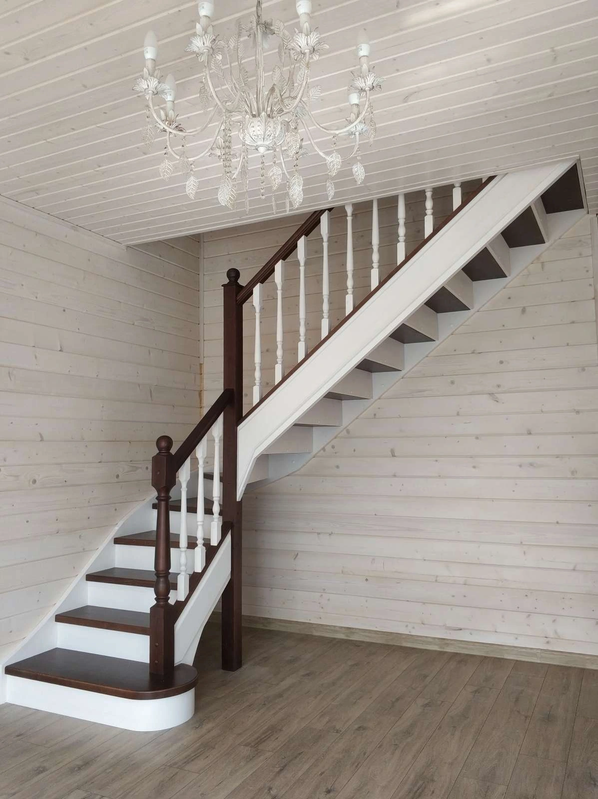

ЛЕСТНИЦЫ ИЗ МАССИВА ДЕРЕВАДерево.
Дерево.
На каждом шаге.
Изготавливаем деревянные лестницы на заказ. Подберём конструкцию, породу дерева и отделку под ваш дом.
Обсудить лестницу
ДЕРЕВО И КОНСТРУКЦИЯУдобный подъём.
Удобный подъём.
Цельный интерьер.
Начнём с проёма и размеров помещения. Продумайте с нами форму лестницы, ступени и ограждение, чтобы каждый элемент был на своём месте.
Обсудить мой проект